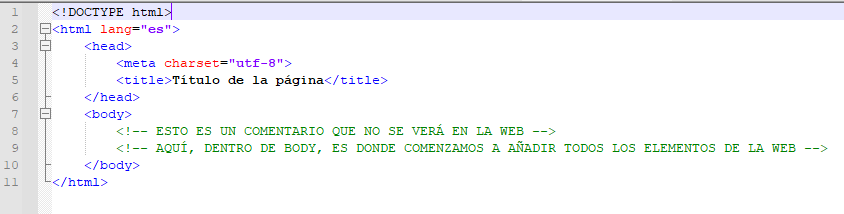

Digitalización
SA1. Montando nuestro ordenador con HTML
Teoría
Estructura básica página web

Pautas para escribir código HTML
- Las etiquetas y los atributos se escriben en minúscula
- Para añadir espacio a la izquierda se utiliza la tecla TABULADOR, NO espacios
- CASI TODAS las etiquetas se abren y se cierran; por ejemplo:
<p> ... </p>. Hay algunas excepciones, como por ejemplo<img>,<hr>o<br> - Siempre que ponemos una etiqueta dentro de otra (es decir, antes del cierre de la anterior) se tabula a la derecha.
- Las etiquetas que se cierran primero son las que están más hacia dentro. Por ejemplo:
<head> <!-- ABRO HEAD -->
<title> Título </title> <!-- ABRO y CIERRO TITLE -->
</head> <!-- CIERRO HEAD -->